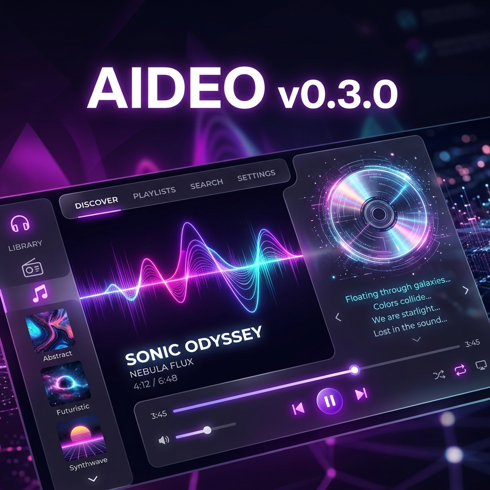

The Interactive Era has arrived. High-fidelity audio meets cinematic design in the most advanced local music player ever built.
Studio-grade signal purity with WASAPI Exclusive Mode and 10-band Parametric EQ. Hear your music exactly as the artist intended.
The interface breathes with your music. Colors intelligently adapt to your album artwork for a fully immersive visual journey.
Never settle for missing lyrics. Use the new Manual Finder to sync perfect .lrc files from global providers instantly.